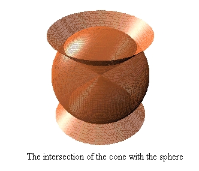
About this page. Here we discuss several examples that involve DPGraph extensively, and in some cases, also indispensably. The examples below are divided into two groups: The first group discusses optimization of functions of 2 or 3 variables over compact regions and manifolds; the second group shows how to set up double and triple integrals using DPGraph. Although these examples and methods do not replace analytical techniques, for 2 or 3 variables they work well beyond the reach of standard (differentiable) analysis.
If you do not currently have a copy of DPGraph installed on your machine, then it is strongly recommended that you first download and install the free DPGraph Viewer. This will enable you to use the scrollbar, and to see the graphics, animations and the commands that create them when you click on the icon:
wherever it appears below. To be able to modify the examples below, it is necessary to obtain the full version of DPGraph and install it on your machine. Just click here and follow the easy directions. Please email any questions/comments/criticisms to Hassan Sedaghat.
Continuous functions on bounded regions. Let f
be a continuous function on a closed, bounded region (or a
compact region). Then by the Extreme Value Theorem, we know that f
is bounded and attains its maximum and minimum values at points
within the compact region. If f(x,y) is a function of
two variables, then we may either graph it as a surface in space
and estimate the max and min values from the graph, or
alternately, we can draw several level curves (or z-slices)
of f(x,y) in the plane until all maxima and minima are
identified. For a function f(x,y,z) of three variables,
only the 3D analog of the second method (i.e., using level
surfaces) is available as a graphical estimation technique. For
the technically minded, in all the examples on this page we
assume that f and the compact region on which it is
continuous are "nice" enough for the computer to handel
(f is piecewise smooth, the region is connected with few
or no holes, its boundary curve or surface is "simple",
etc.)
Let's start with a 2 variable example so as to illustrate the way
the method works.
Example 1: Level curves and extrema.
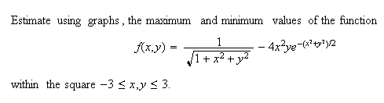
Solution. First, graph f(x,y) as a surface using DPGraph. Then scroll z-slices up or down in the DPGraph's scrollbar menu. The graph below shows a few snapshots of this scrolling process: 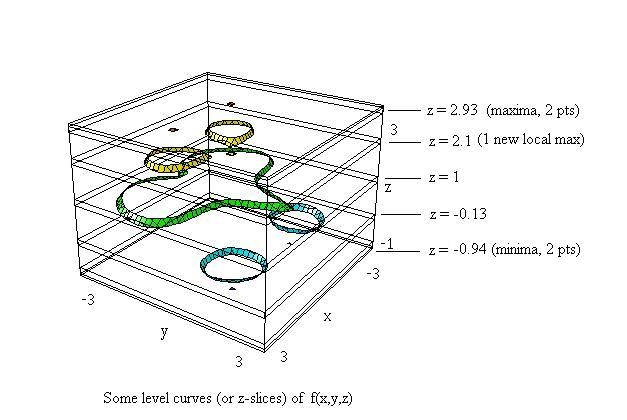
It is clear from the above that we can get good estimates of maxima and minima. If we scroll down, then we first encounter the two points at the top where the maximum value of f occurs within the closed square region of this problem. The value at the bottom of the DPGraph screen (namely, 2.93) gives the estimate for the maximum of f. As we continue scrolling down, we see an additional local maximum point. Continuing, we observe the two closed loops (see the level z = -0.13) shrink into two points and then disappear. Clearly, the bottom two points are the minima, with f approximately equal to -0.94 (to see a graph of f(x,y) as a surface, click here).
Example 2: Level surfaces and extrema, 3 variables. 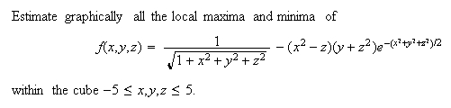
Solution. We apply the method of Example 1. Instead of z-slices, however, we set f(x,y,z) = a, where a is a parameter whose values give the level surfaces of f. DPGraph's scrollbar lets us change a, and for each value of a, DPGraph immediately draws the corresponding level surface. Thus by scrolling down, first local maxima will pop in one by one, and then the local minima can be identified as they pop out, analogously to Example 1. Notice that maxima/minima on the individual level surfaces themselves are not relevant here; only the values of a at which some shape pops in or out are significant. To see some snapshots of the process, click here.
Click the icon for an interactive session.
Visualizing Constrained Optimization.
According to the Lagrange Multiplier Method, a function f(x,y) has a maximum or a minimum subject to a constraint equation g(x,y) = 0 if the graph of g is tangent at one or more points to a level curve of f, under suitable differentiability assumptions. At these tangency points, the gradients of f and g are scalar multiples of each other and the coordinates of tangency points can be determined by solving a system of 3 (usually nonlinear) equations. This same notion extends to any number of variables; for three variables, we find the points of tangency of the surface g(x,y,z) = 0 to the level surfaces of f(x,y,z) by solving a system of 4 equations.
Example 3: Finding max/min subject to a constraint, 2 variables.
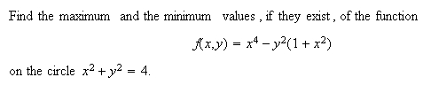
Solution. We draw the constraint cirlce in DPGraph, and add in the equation f(x,y) = a. Using scrollbar, we change the value of a, and observe the corresponding level curve in relation to the circle. At points where the level curve of f touches the circle, we have the critical points (estimates to the solutions of the system of equations in the Lagrange multiplier method). The values of f read off from the bottom of the DPGraph screen then give us the estimates to the max and the min of f on the circle. Note that not all the points of tangency between the level cruve and the circle correspond to maxima or minima, but they do correspond to the critical points of the Lagrange mutlipliers system of equations, since the gradient vectors are parallel at all tangency points. To see snapshots of the scrollbar process, click here.
Click
on the icon for an interactive session.
For a 3D view of the above scrollbar analysis, click here. Unfortunately, there is no analog of this "static" 3D version for 3 variables, since we would need to plot in 4 dimensions. Only the "dynamic" scrollbar analysis is possible for 3-variable problems.
Example 4: Finding max/min subject to a constraint, 3 variables.
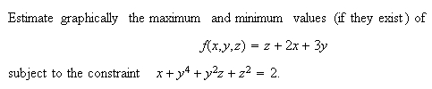
Solution. As in the previous examples, we set f(x,y,z) = a and use DPGraph's scrollbar to change the value of a. As we scroll down, for each value of a, we get a level surface of f, here a plane, that moves in relation to the fixed surface representing the constraint equation. It is important here that we verify the tangency of a level surface to the constraint surface, before the corresponding value of a is claimed as either a max or min. If the graphs do not touch or if they cut through each other, then the value of a does not give a max or min value of f. It may be necessay to rotate the graph several times using the arrow keys in order to be sure that tangency in fact occurs. Click here to see snapshots.
Click
on the icon for an interactive session.
The figure clearly shows that the function f has a maximum that is achieved at a unique point on the constraint surface. However, f has no minimum on the constraint surface, since the graph of f never leaves that surface. To see this analytically, set y = 0 and solve the constraint for x to get x = 2-z^2; setting this y and x into f we obtain the expression z + 4 - 2(z^2) which approaches negative infinity as z does. Hence, f does not have a least value on the constraint surface.
Example 5: Finding max/min subject to a constraint, 3 variables.
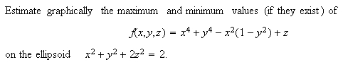
Solution. In this problem surfaces involved overlap, so it is difficult to see the where the constraint ellipsoid is tangent to a level surface of f. To overcome this problem, we increase the "transparency" in the DPGraph edit menu so that the inner surface shows through the outer surface. Now, proceeding as in Example 4 with the scrollbar, we obtain a series of critical points where level surfaces of f are tangent to the ellipsoid. Click here to see the snapshots. While scrolling, it is necessary to rotate the figure frequently to get a good visual estimate of tangency; alternately, we click "Animate" in DPGraph and then click "continuously rotate" so that the graph keeps turning as we scroll. Careful scrolling shows the existence of 14 critical points, the first 2 of which give the maximum of f on the constraint ellipsoidal surface and the last 2 give the minimum of f on that surface. The snapshots mentioned above show 10 of these critical points, including those at which the maximum and the minimum values of f occur. The remaining 4 (not shown) occur simultaneously when f(x,y,z) is approximately equal to 1.3.
Click on the icon for an interactive session.
To see a movie of this process (if DPGraph or the Viewer is installed), click here. To get the full effect after you start the movie, click "animate" in the DPGraph toolbar, then "continuously rotate".
Extrema over compact regions: Non-smooth functions and boundaries.
In the preceding examples, the function f is always smooth, and the same is true of the function g defining a constraint equation. However, from the vantage point of a DPGraph user, it is clear that none of this really matters. The next two examples show how graphical estimates afforded by the DPGraph apply in cases where standard methods fail. Again, let's begin with 2 variables.
Example 6: Finding max/min over a compact region, non-smooth case. 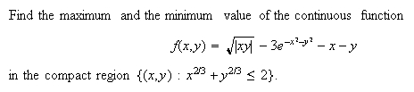
Solution. Given that f must have a max and a min in the compact region, all we need to do is draw level curves of f from sufficiently high up that nothing yet appears within the region or on its boundary. Then come down and record the value of f when the FIRST contact is established between the region and a level curve (locations in the compact region where the maximum value of f occurs) and later, when the LAST contact occurs (locations where minimum of f occurs). Click here to see 2D snapshots and a 3D equivalent.
Click on the icon for an interactive session.
Example 7: Finding max/min on a compact region, 3 variable non-smooth case.
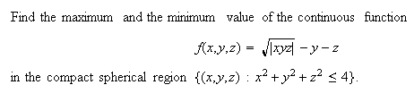
Solution. The process is now familiar: Set f(x,y,z) = a, and scroll through the values of a. Click here to see snapshots of the scrollbar process and find out what the maximum and the minimum values of f over the ball are.
Click on the icon for an interactive session.
Part 2: Setting up Double and Triple Integrals
This is one of the more laborious tasks in multivariable calculus. In all but the simplest examples, graphing a region of integration, particularly in 3D space, is difficult and requires graphing software. The fact that the bounded regions in question are not always easily expressible as functions further complicates the situation. In addition, one often needs to detemine the curves or surfaces that make up the boundary of such a region or its projection into one of the coordinate planes, and this process usually requires calculation of intersection points of curves.
DPGraph can tackle all the plotting jobs invloved and also give good estimates of the crucial intersection points via its scrollbar. This eliminates the need for a calculator or numerical approximation software, at least for region sketching and the integral set up job - tasks that in the past have often dogged students and teachers alike. But no more! We illustrate with some examples, which are not meant to be comprehensive or even challenging mathematically. They should, however, point the interested reader in the right direction, where he or she can explore further and discover lots of interesting tidbits.
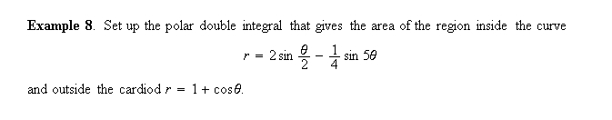
Solution. First, graph the two curves and the region they bound:
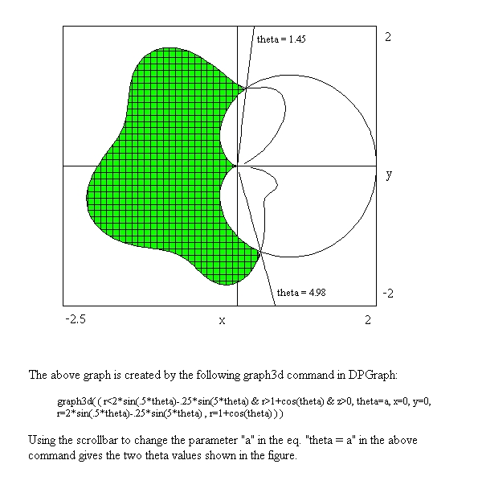
Inserting the "z > 0" automatically shades the region specified by the "&-separated" inequalities. As noted above, finding the "theta" angle values is a breeze; the scrollbar values are usually good to one or two decimal places. If greater accuracy is desired, we can feed the DPGraph values into a calculation device as good "initial guesses" for Newton method-like estimation. Doing just that with Mathcad 8 (out of curiosity) gave me the values: 1.4500020329 and 4.9819627052. Not bad!
Click the icon for an interactive session.
Now, for the double integral... in case you are not sure which "r-curve" goes on top in the integral and which to the bottom, just pick any theta value whose ray goes through the shaded region; the curve which is hit by the ray first, goes to the bottom! Armed with all this information, setting up our area double integral is a snap:
The set up is complete! The curious reader can compute this integral using only a couple of trigonometric identities, and/or a computation device. The answer is approximately 4.974.
Example 9. (A triple integral set up)
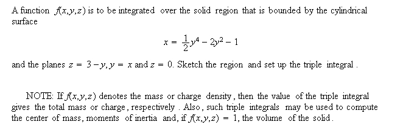
Solution. First, we sketch region in question with the DPGraph to see what the relationships of the various surfaces and planes are to each other (which lies above, which below and which to the sides). For a sketch of this solid, the surfaces that bound it, and the solid's projections into coordinate axes, click here. The projections into the xy and into the yz coordinate planes are obtained by setting the view to "top" or to "side", respectively, and setting the perspective to "false"; the projection into xz plane (not shown) can be obtained by setting the view to "front".
The two projections shown offer immediate insight as to how to set up the triple integral. We have a choice of two equally good starts, and I take the projection into the xy plane. By adding the term "y = a" to the equations in DPGraph, and carefully changing the value of a using the scrollbar, we can estimate the coordinates of the two intersection points of the quartic curve with the line y = x to be approximately 2.29 and -1.87. Click here to see both a detailed diagram and a way of improving upon the visual estimate (note that this new view of the xy projection is "cleaner" than the previous one, because we did not draw the solid itself; only the boundary curves in 2D, like Example 8 above). From the various diagrams above, the integral is now easy to write down:
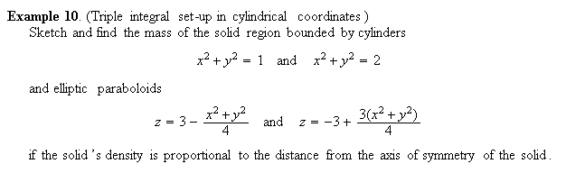
Solution. It is relatively simple to graph the solid region; simply enter the above equations into the DPGraph as you see them here, or first convert to polar-cylindrical coordinates. Either way, a good representation of the solid region is obtained. There are two ways in which we can do this: First, we can graph all four surfaces (the cylinders and the paraboloids) within one coordinate system (click here to see a graph) or, using inequalities, we can graph the solid itself (click here for a graph).
Click the icon for an interactive session.
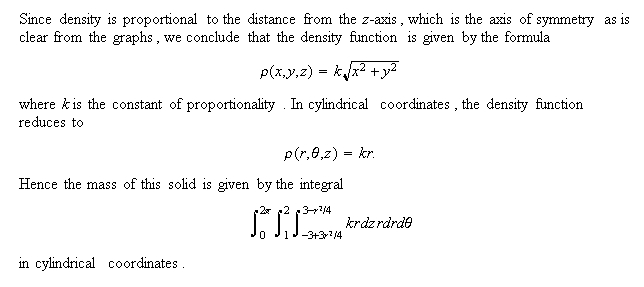
{kind=link}
{kind=link}
{kind=link}
{kind=link}